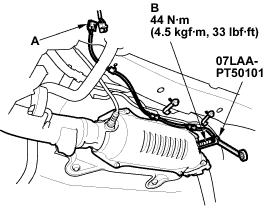

Special Tools Required
O2 sensor wrench 07LAA-PT50101
- Disconnect the secondary HO2S 4P connector (A), then remove the secondary HO2S (B).

- Install the secondary HO2S in the reverse order of removal.

PGM-FI System
|
11-95 |
|
Special Tools Required O2 sensor wrench 07LAA-PT50101

|
|